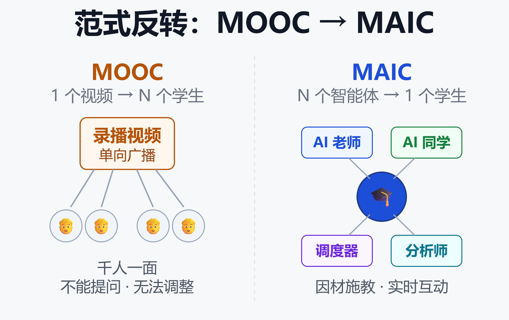
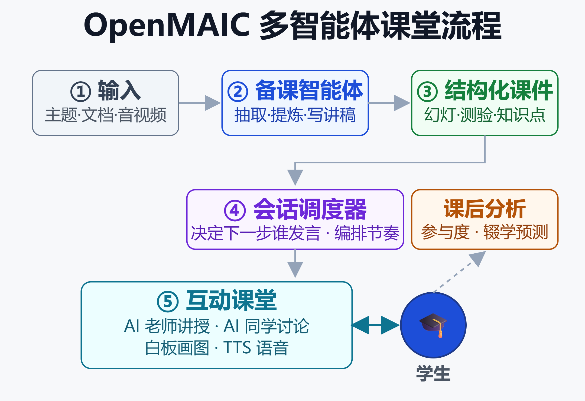

从 MOOC 到 MAIC：清华用「N 个智能体服务 1 个学生」重构在线教育
2026 年 9 月 8 日，巴黎，联合国教科文组织总部。两位来自清华大学教育学院的老师，用一个开源项目现场从零做出一门课。据新智元报道，这是中国 AI 教育智能体团队第一次站上联合国的讲台。
他们带去的，是清华 THU-MAIC 团队开源的 OpenMAIC，圈内人叫它「教育龙虾」。今年 3 月开源、30 天就冲上 GitHub 1.6 万 star，到 8 月底 v1.0.0 发布时已突破 3.3 万。
一个非盈利的开源项目，能被请上联合国讲台，靠的不是几个 demo。它触动的是在线教育一个绕不开的老矛盾：视频课能服务几百万人，却没法为每个人调整节奏；一对一辅导能因材施教，却贵到无法规模化。过去二十年，MOOC 选了「规模」这一边，代价是把学习变成了单向观看。
OpenMAIC 的学术源头是 2024 年的论文《From MOOC to MAIC》。AMD 官方博客给过一句很精炼的概括：MOOC 是「一个视频服务 N 个学生」，MAIC 是「N 个智能体服务 1 个学生」。这次师生比的反转，就是这篇文章要拆的核心。
一、先看清 OpenMAIC 到底是什么
OpenMAIC 的全称是 Open Multi-Agent Interactive Classroom，开放式多智能体互动课堂。它做的事一句话能说清：把任意一个主题或一份文档，一键变成一间有 AI 老师和 AI 同学的沉浸式课堂。
你给它一个题目（比如「教我量子物理」）或上传一份材料，平台会自动生成整门课的幻灯片、测验、可交互仿真和项目式学习任务，再由 AI 老师讲授、AI 同学参与讨论。
这不是又一个「AI 出题」或「AI 生成 PPT」的工具。它的野心是把「备课—上课—课后」这条完整链路都交给多个协作的智能体来跑。
关键事实先摆出来：
- 出品方：清华大学 THU-MAIC 团队，学术源头是论文《From MOOC to MAIC》（arXiv:2409.03512）
- 开源热度：GitHub 约 3.4 万 star、5.6k fork，用 TypeScript / Next.js 构建
- 许可证：v0.3.0 起从 AGPL-3.0 改为 MIT，商用门槛大幅降低
- 最新版本：v1.0.0 于 2026 年 8 月 27 日发布，加入 Agent 工作台
值得注意的是它的定位是「平台」而非「模型」。OpenMAIC 自己不训练大模型，它是模型之上的编排层，你需要自带 API key。
二、范式反转：MOOC 与 MAIC 的根本差别
理解 OpenMAIC，先要理解 MAIC 这个概念相对 MOOC 到底变了什么。

MOOC 的本质是「广播」：一份录好的内容，单向推送给所有人。它解决了知识分发的规模问题，但每个学生看到的东西完全一样，遇到不懂的地方只能反复倒带，没人回答提问。
MAIC 把这个关系倒了过来。不再是一份内容服务所有人，而是围绕每一个学生，实时生成一整个「班级」的智能体：有讲课的老师、有一起讨论的同学、有管理课堂节奏的调度者。
这三点差别最能说明问题：
- 内容形态：MOOC 是固定录播，MAIC 是按需实时生成
- 交互方向：MOOC 单向观看，MAIC 可随时提问、讨论、被反问
- 个性化：MOOC 千人一面，MAIC 围绕单个学生动态调整
用论文里的话说，MAIC 想同时抓住「规模化」和「适应性」这两个过去只能二选一的目标。规模化靠 AI 自动化，适应性靠多智能体围绕个体实时响应。
这也是为什么它的名字里有「Massive」——它要的不是小范围精品辅导，而是把一对一的体验做到能服务海量学生。
三、四类智能体：一堂课是怎么被「生产」出来的
OpenMAIC 的课堂不是一个大模型硬撑出来的，而是把教学拆成若干专职角色，各自负责一段流程。

第一类是备课智能体（Teaching Preparation）。它们负责把原始材料变成课堂能用的结构化内容：从幻灯片里抽取文字和图像、生成每页的讲解描述、提炼知识点、写出带教学标记的讲稿，还会预生成提问。
第二类是讲授与陪伴智能体，也就是课堂里那位 AI 老师和几位 AI 同学。老师负责讲，同学负责提问和讨论，营造出一种真实课堂的社交氛围。
第三类是会话调度器（Session Controller）。这是整个系统的「导演」，它记录课堂里所有发言的历史和当前状态，决定下一步该由谁发言、执行哪个教学动作。
第四类是课后分析智能体，负责学习数据的分析，比如判断学生的参与度、预测是否可能中途放弃。
支撑这套流程的还有两个工程要点：
- 结构化表示：每页幻灯片被拆成「文字、视觉、描述、知识节点」四部分，才能被自动化处理
- RAG 检索增强：智能体的输出会被约束在课程知识和历史对话里，减少跑题和瞎编
需要强调的是，OpenMAIC 并没有把人类老师完全踢出局。论文明确了「人在环路」的设计：讲稿和问题会经过真人教师审核，以保证教学质量。
四、v1.0.0 带来了什么：从「一键生成」到「可对话调教」
早期版本的 OpenMAIC 更像一个「一句话出一门课」的生成器：你说主题，它给结果，改动空间有限。
2026 年 8 月的 v1.0.0 加入了 Agent 工作台（Pro workbench），把交互模式从「下单」变成了「协作」。你可以和一个智能体持续对话，让它规划课程大纲、逐页搭建和修订内容。
这一版几个实打实的升级：
- 可持久化会话：课程构建过程存在服务端，重启不丢，可随时取消、续跑、干预
- 会话素材：能上传文档、音频、视频，或联网搜索，智能体基于这些材料建课
- 内置技能：附带 20 个内置技能，覆盖幻灯片、测验、交互、PBL、图像、视频、配音、pptx 导入
- 可插拔存储：服务端能力做到模型、媒体、搜索、存储后端都可替换
配套的持久化方案给了一个 PostgreSQL 参考实现，用一条 docker compose 命令就能起一套「应用 + 数据库」两容器的服务端环境。
对想私有化部署的团队来说，这一步很关键：它意味着 OpenMAIC 不再只是个玩具 demo，而是有了持久化和会话管理的、更接近生产形态的系统。
五、能力矩阵：它到底能生成什么样的课
OpenMAIC 的课堂不止是「PPT + 语音」，它支持几种差别很大的场景类型。
| 场景类型 | 用途 |
|---|---|
| 幻灯片 | 结构化讲授主干 |
| 测验 | 即时检验掌握程度 |
| 交互仿真 | 3D、模拟、游戏、编程 |
| 项目式学习 | 完成一个动手任务 |
其中「深度交互模式」是比较有想象力的一块，它支持 3D 可视化、模拟实验、小游戏、思维导图，甚至在线编程，让学习从「听」变成「做」。
课堂的临场感来自两个细节：AI 老师能在白板上画图、写公式，也能用 TTS 语音把内容讲出来，而不是让你干读文字。
产出还能导出复用：可以下载成可编辑的 pptx 幻灯片，或导出成可交互的 html 页面，离线也能用。
在模型选择上，OpenMAIC 走的是彻底的「模型中立」路线，支持的供应商几乎覆盖了主流全家桶：
- 国际：OpenAI、Azure OpenAI、Anthropic、Amazon Bedrock、Google Gemini、Grok
- 国内：DeepSeek、通义千问、Kimi、MiniMax、豆包、腾讯混元、智谱 GLM、小米 MiMo
- 本地：Ollama、Lemonade、FunASR，可在本机跑 LLM、图像、TTS、ASR
这种中立设计的好处很直接：不绑定单一厂商，成本和合规都能自己掌控。想深入理解这种反锁定思路，可以参考反供应商锁定的 AI 工作流设计指南。
六、OpenMAIC Skill：把课堂塞进你的聊天软件
v1.0.0 还有一个容易被忽略但很有意思的能力：OpenMAIC 打包了一个标准 SKILL.md 格式的技能。
这意味着它不只能在自己的网页里用，还能接入各种 Agent 工作台——除了 OpenClaw，还支持 Codex、DeepSeek、WorkBuddy 等。
结果就是你可以在飞书、Slack、Telegram 这类聊天软件里，甚至直接在 IDE 里，一句话生成一间 AI 课堂。学习的入口从「打开一个网站」变成了「在你已经在用的工具里说一句话」。
对于关心智能体如何通过标准协议互相调用的读者，这套 Skill 机制背后的思路，和我们之前拆解过的 MCP 与 A2A：AI Agent 协议之争深度解析 一脉相承。
七、实证数据：清华试点到底验证了什么
OpenMAIC 最有说服力的地方，是它背后有真实的教学实验数据，而不只是概念演示。
论文报告的试点规模是：在清华大学，基于 500 多名学生、超过 10 万条学习记录做了分析。这个体量在教育类 AI 研究里相当扎实。
几个关键发现值得单独拎出来：
- 讲稿质量：自动生成的「FuncGen」讲稿在语气、清晰度、支持性等维度上，评分超过人工撰写和基线自动方案
- 调度准确性：会话调度器自动选择的教学动作，与人工标注的「标准答案」高度一致
- 参与度与成绩正相关：学生和智能体对话的频次、长度，与测验和期末成绩显著正相关
最反直觉的一条来自后续研究：预测学生是否会中途放弃，最强的信号不是性别、专业这类人口学特征，而是「对话参与度」——你和 AI 聊得越多、越充分，越不容易掉队。
这条发现的价值在于它给了干预的抓手：系统能在学生参与度下滑的早期就识别出来，及时介入，而不是等人已经流失了才后知后觉。
比论文数据更能说明问题的，是它两年多里从校内试点一步步跑到公开平台的规模曲线。据新智元报道，这条路径大致是这样走出来的：
- 校内起步：清华《迈向通用的人工智能》首批试点 700 人报名、跑出超 10 万条互动，第二学期扩到文理工医各专业，报名破 2000 人次
- 走向公共平台：2025 年 4 月上线国家智慧教育公共服务平台，到当年 7 月底注册用户累计 19.2 万
- 口碑验证：《大学如何学》连续两年给清华新生开课，教研院全程跟踪，学生满意度 92%
开源之后规模进一步放大：官方 Live Demo 平台聚集了约 55 万创作者，生成上百万门 AI 课程，AI 交互超过 3400 万次，用户分布在 154 个国家和地区。
落地场景也不只是清华自己：校内 13 个院系、50 多门课在用；校外覆盖人大附中、苏州中学、吉林省实验中学等，海外则在中东、巴西、马来西亚、德国、法国、美国等地推进本地化部署。
这组数字的意义在于，它把 OpenMAIC 从「一篇论文里的实验」变成了「真实课堂里被反复验证的系统」——这也是它能被请上联合国讲台的底气。
八、它在 AI 教育赛道里站在哪
把 OpenMAIC 放回大背景看，它踩中的是 AI 从「工具」向「Agent」演进的大趋势——这个范式转变我们在从 LLM 到 Agent：为什么说 Chat 已死里有过完整讨论。
教育是这波多智能体应用里落地感很强的一个场景，原因有三个。
第一，教学天然可拆分。备课、讲授、答疑、课堂管理本就是不同角色，映射到多智能体系统非常自然。
第二，容错空间相对大。相比医疗、金融，教育场景对单次输出的错误更宽容，且有人类教师兜底审核，适合作为多智能体的早期练兵场。
第三，需求足够刚。个性化教育的成本一直是硬约束，谁能把一对一体验做到规模化，谁就抓住了真痛点。
它的开源和 MIT 许可证，还降低了教育机构、独立开发者做二次开发的门槛。对正在思考 AI 时代教育走向的人来说，它至少提供了一个能上手研究的完整样本。
九、冷静看：三个需要正视的边界
热闹归热闹，决定投入前有几个现实问题必须想清楚。
第一，内容质量高度依赖底层模型。OpenMAIC 是编排层，它生成内容的准确性、深度，本质上取决于你接的是哪个大模型，以及提示工程的水平。模型会幻觉，课件也就会出错，人工审核这道关不能省。
第二，成本不容忽视。多智能体意味着一堂课要多次调用大模型，还可能叠加 TTS、图像、视频生成。真要规模化服务大量学生，API 账单和算力都是实打实的开销。
第三，「AI 同学」的真实效果还需长期验证。试点数据看起来正面，但沉浸式的社交学习体验能否长期维持学习动机、是否会因为「知道对面是 AI」而打折扣，目前样本还不足以下定论。
还有一个更宏观的追问：当 AI 能生成一整间课堂，人类教师的角色如何重新定位。这不是技术能单独回答的问题，也是每个想引入这类工具的机构绕不开的。
小结
OpenMAIC 的价值，不在于它又生成了多好看的 PPT，而在于它把在线教育的底层关系重写了一遍：从「一份内容服务所有人」变成「一整个 AI 班级围着一个学生转」。
清华的试点数据给了这个反转初步的实证支撑——自动讲稿能打、调度够准、参与度真的和成绩挂钩。MIT 开源、模型中立、v1.0.0 的持久化工作台，则让它从研究原型走向了可落地的形态。
但它终究是模型之上的一层。内容质量、成本、长期学习效果这三道题，决定了它是会成为在线教育的新范式，还是停在「很酷的 demo」。答案要靠更多真实课堂来写。
免责声明
本文基于公开资料整理，用于技术分析与信息分享，不构成任何投资、采购或教学决策建议。文中数据来自 OpenMAIC 官方仓库、论文及相关公开报道，可能随版本更新而变化，请以官方最新信息为准。项目使用请遵循其开源许可证条款。
参考来源
- GitHub —— THU-MAIC/OpenMAIC 开源仓库
- arXiv —— From MOOC to MAIC: Reshaping Online Teaching and Learning through LLM-driven Agents
- OpenMAIC —— 官方站点
- AMD —— Reimagining AI-Native Education Through Multi-Agent Interactive Classroom on AMD ROCm
- EmergentMind —— Massive AI-Empowered Course (MAIC) 概念梳理
- 博客园 —— OpenMAIC：清华大学开源多智能体互动课堂
- 新智元 —— 中国首个！清华「龙虾老师」登上联合国讲台，GitHub 暴涨 3 万星
延伸阅读
- 从 LLM 到 Agent：为什么说 Chat 已死
- MCP 与 A2A：AI Agent 协议之争深度解析
- 多智能体协作框架实战指南
- 反供应商锁定的 AI 工作流设计指南
- AI 时代高考志愿与专业选择指南
推荐搭配装备
善其事，利其器。以下硬件能最大化你的AI体验👇
🔗 通过以上链接购买可支持本站持续运营 🙏